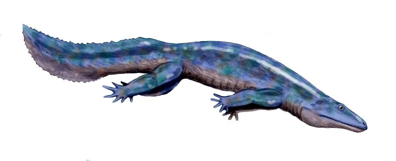

Vertebrados
¿Qué son los anfibios?
Origen
Los anfibios son una clase de animales vertebrados anamniotas (sin amnios, al igual que los peces), tetrápodos, ectotérmicos, con respiración branquial durante la fase larvaria y pulmonar al alcanzar el estado adulto.
A diferencia del resto de vertebrados, se distinguen por sufrir una transformación durante su desarrollo (este cambio puede ser largo y se denomina metamorfosis)
Los anfibios fueron los primeros vertebrados en adaptarse a una vida semiterrestre, presentando en la actualidad una distribución cosmopolita al encontrarse ejemplares en prácticamente todo el mundo, estando ausentes solo en las regiones árticas y antárticas, en los desiertos más áridos y en la mayoría de las islas oceánicas. Hay descritas 7492 especies de anfibios.
El origen de los anfibios se remonta al período Devónico, hace aproximadamente 370 millones de años, cuando algunos peces con aletas lobuladas (como los sarcopterigios) comenzaron a adaptarse a la vida fuera del agua. Estos peces desarrollaron estructuras óseas más fuertes en sus aletas, que evolucionaron hacia extremidades capaces de soportar el peso corporal en tierra firme. Además, modificaron sus sistemas respiratorio y sensorial para adaptarse al ambiente terrestre. Así, surgieron los primeros tetrapodos (vertebrados con cuatro extremidades), de los cuales los anfibios actuales son descendientes directos. Esta transición marcó un hito evolutivo, ya que permitió a los vertebrados colonizar hábitats terrestres, aunque los anfibios aún mantienen una estrecha relación con el agua para su reproducción.
Evolución y sistemática:
Tetrápodos
Los primeros tetrápodos se originaron de los peces de aletas lobuladas (sarcopterigios) compartiendo un antepasado con los peces pulmonados conservando aún agallas y escamas, pero que en lugar de aletas presentaban patas anchas y aplanadas con un gran número de dedos, como es el caso de los ocho y siete en las especies de los géneros Acanthostega e Ichthyostega respectivamente. Los cambios y las adaptaciones a la vida terrestre se siguieron suscitando, entre los cuales se pueden nombrar la evolución de una lengua viscosa y protráctil (empleada primordialmente en la captura de las presas), el desarrollo de glándulas cutáneas secretoras de veneno (como método de defensa), párpados móviles y glándulas para la limpieza, protección y lubricación de los ojos; entre otras.
Existe un intenso debate en lo que respecta a la definición de "anfibio". La concepción clásica de anfibio, considerada hoy parafilética, considera anfibios a todos los tetrápodos anamniotas (huevo no protegido por un amnios ni una cáscara). Según la sistemática cladística, el concepto de anfibio es mucho más restringido e incluyen en este grupo solo a los anfibios modernos y sus antepasados más cercanos, y a los amniotas y a sus antecesores más inmediatos. Hoy en día se considera que los anfibios comprenden los anfibios modernos y sus antepasados fósiles más cercanos. El clado que incluía la mayor parte de los anfibios fue nombrado Stegocephalia.
Stegocephalia
Los estegocéfalos (Stegocephalia) son un antiguo grupo de tetrápodomorfos que incluía todas las formas anteriores al Jurásico y unas pocas posteriores, con un aspecto más o menos parecido al de una salamandra. El nombre del grupo alude a la presencia de una armadura ósea en el cráneo que tuvieron algunas de las especies de mayor tamaño.
En origen, los estegocéfalos fueron considerados como una unidad taxonómica con categoría de orden; más tarde se usó en término Labyrinthodontia, dividido en tres órdenes. No obstante, dado que tanto los estegocéfalos como los laberintodontos son parafiléticos, el nombre se usa ahora de una manera informal para denominar los primeros vertebrados no pisciformes, excluyendo los anfibios modernos y los amniotas.
Tetrapoda
Los tetrápodos (Tetrapoda), del griego tetra- 'cuatro' y ‒́podo 'pies',son un clado de animales vertebrados con cuatro extremidades, ambulatorias o manipulatorias. Los anfibios, mamíferos y los saurópsidos (reptiles y aves) son tetrápodos, (incluidos los anfibios ápodos y serpientes, cuyos antepasados tenían cuatro patas). El término es especialmente útil para describir a los miembros más primitivos del grupo, que radiaron desde los sarcopterigios (peces de «aletas lobulares») a los primeros anfibios del período Devónico.
Reptiliomorpha
Los reptiliomorfos (Reptiliomorpha, con forma de reptil) son un clado que agrupa a tetrápodos que combinan tanto características de reptiles como de anfibios. Se originaron a comienzos del período Carbonífero, exhibiendo tanto formas acuáticas como terrestres. Para mediados del período Pérmico, todas las formas terrestres se habían extinguido. Solo la familia Chroniosuchidae y los amniotas (que se originaron a finales del Carbonífero) sobrevivieron a la extinción masiva del Pérmico-Triásico; los primeros se extendieron hasta finales del Triásico Inferior, mientras que los amniotas florecieron y continuaron diversificándose. El grupo también se puede denominar Pan-Amniota.
Amphibia
La definición de Amphibia es variable debido al debate sobre la posición taxonómica de Lissamphibia como por la clasificación tradicional. Esto empeora aún más por el hecho de que el término coloquial "anfibio" fue y sigue siendo usado como un adjetivo general para los animales que podían vivir en la tierra o en el agua, como las focas, nutrias, saltadores de fango, hipopótamos, paiches, etc. por lo que el término "anfibio" carece realmente de valor taxonómico, pero el nombre Amphibia aún se puede utilizar como una reunión de los lisanfibios (los "anfibios" modernos) con los grupos Temnospondyli o Lepospondyli, excluyendo a batracomorfos no pertenecientes a los dos grupos anteriormente mencionados, reptiliomorfos, y tetrápodos estegocefalios que estén fuera de los tetrápodos corona
3 Definiciones de Amphibia:
- Amphibia tradicional que contiene todos los tetrápodos (es sentido de Stegocephalia) que no son amniotas. El grupo es parafilético.
- Amphibia como el grupo que incluye a los temnospóndilos y/o lepospóndilos lo que conlleva a dos alternativas. Un grupo monofilético que engloba a los temnospóndilos parafiléticos y lisanfibios.
- Amphibia englobando a los temnospóndilos y lepospóndilos, este último fue evaluado como un grupo polifilético que se divide en Adelospondyli, Microsauria y Gymnophiona, lo que hace que esta tercera definición de Amphibia sea parafilética y equivalente a Panlepospondyli.
Anfibios modernos
Todos los anfibios actuales se agrupan, por lo general, en el grupo Lissamphibia, el que está compuesto por los clados Gymnophiona, Caudata y Anura, los cuales están organizados según el tipo de estructura vertebral y de extremidades. Los gimnofiones (conocidos coloquialmente como cecilias o apodos) corresponden a los anfibios modernos más escasos, desconocidos y peculiares. Son excavadores de aspecto vermiforme desprovistos de patas y que poseen una cola rudimentaria y tentáculos olfativos. Habitan únicamente en las regiones tropicales húmedas.
Por otra parte, los caudados (salamandras o tritones) están provistos de miembros iguales y de una cola. Los adultos se parecen bastante a los renacuajos, las únicas diferencias son la presencia de pulmones en lugar de las branquias y la posibilidad de reproducirse y de vivir fuera del agua. En ella se mueven con soltura gracias a los movimientos laterales de la cola. Fuera de ella utilizan las cuatro patas para andar.
Finalmente, los anuros (ranas o sapos) están provistos de miembros desiguales y carecen de cola en el estado adulto, presentando, como adaptación al salto, una columna vertebral reducida y rígida llamada urostilo. Durante la etapa larvaria atraviesan por un estado pisciforme. Presentan una dieta carnívora, como la gran mayoría de anfibios en etapa adulta (siendo por lo general herbívoros en estado larvario), alimentándose de insectos, arácnidos, gusanos, caracoles y casi cualquier animal que se mueva o sea lo suficientemente pequeño como para ser engullido completamente. El tracto digestivo es relativamente corto en los adultos, una característica en la mayoría de los carnívoros. Casi todos viven en charcas y ríos, pero algunos son arborícolas y otros habitan en zonas desérticas siendo activos solo durante la época de lluvias. Se conocen 206 especies de cecilias, mientras que los caudados y los anuros están representados por unos 698 y unas 6588 especies, respectivamente.
Caracteristicas de los anfibios
Piel húmeda y permeable
Sin escamas, rica en glándulas mucosas, lo que facilita el intercambio gaseoso (respiran también por la piel).
Respiración mixta:
Pueden respirar por branquias (en estado larval), pulmones (en adultos) y piel.
Metamorfosis:
Pasan por un cambio drástico durante su desarrollo (por ejemplo, de renacuajo a rana).
Reproducción acuática:
Sus huevos carecen de cáscara y necesitan ambientes húmedos o acuáticos para desarrollarse.
Sangre fría (ectotermos):
Su temperatura corporal depende del ambiente.
Hábitat doble:
Viven tanto en el agua como en tierra, especialmente en zonas húmedas.
Reproducción
Los anfibios son dioicos, es decir, poseen sexos separados, existiendo muchos casos de dimorfismo sexual. Presentan fecundación interna y externa, siendo en su mayor parte ovíparos. La puesta, al no estar los huevos resguardados contra la desecación, se efectúa normalmente en agua dulce y está conformada por una multitud de pequeños huevecillos unidos por una sustancia gelatinosa,estando, a su vez, cubiertos por una o más de estas membranas que los protegen de los golpes, de los organismos patógenos y de los depredadores. Los cuidados paternales están presentes en un menor número de especies, al exhibir la gran mayoría una estrategia r respecto a la reproducción.
.jpg)